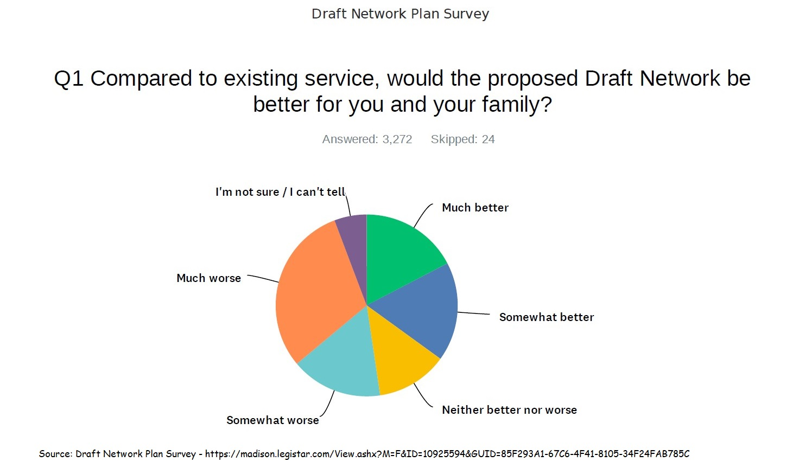

Inadequate Community Engagement in Madison's 2022 Bus Network Redesign
Susan De Vos, Jonathan Mertzig, Laura Green, Kim Owens | September 10, 2022

"The success of the project depends solely on the participation of the community." - Metro After over a year and a half of studying the existing bus network and drafting a plan for its redesign, the Madison Common Council approved a network redesign on June 7, 2022 that would dramatically alter Madison's public transportation system. Metro claimed that an important contribution to the study and its ultimate draft plan was "community engagement." We disagree. Rather, it would appear that most of the alders who voted for the plan had no clue as to what they were voting for, but rather mindlessly followed the advice of a flawed and undemocratic oversight committee. First, Madison voters overall had expressed a strong desire for a better bus system that would include both Bus Rapid Transit and a beefed up local bus system. In 2019, voters agreed to an additional tax (or Vehicle Registration Fee) with that in mind. It was not a matter of community engagement that the Mayor generated the money saying one thing but now intends to spend it on something else. And the pandemic has provided the perfect cover for such an undemocratic determination. A bold part of Mayor Rhodes-Conway’s platform in 2019 when running for election was to proffer an opposing position to the commonly-held notion that Madison could not add Bus Rapid Transit to its bus network without a Regional Transport Authority. She is reported to have said that although having an RTA might be best, it was being blocked by the state legislature. She did not think we should wait. When asked how she would fund Bus Rapid Transit without revenue from an RTA, she is reported to have replied that all options are on the table ... including a local wheel tax and a referendum. She did not mention her now-chosen option of taking pre-wheel tax amounts already allotted for Metro operations for the addition of Bus Rapid Transit, necessitating the elimination of much of the existing local service. To the contrary, when the local wheel tax was approved that Fall, it was reported that some of the revenue would go toward an enhanced bus system that would include "increase(d) bus service on the city’s South and Southwest sides, including ... more night and weekend trips." Do people know that that turned out to be false? The new plan adds Bus Rapid Transit to the bus network at the expense of many current runs to the South and Southwest sides, not in addition to them. The plan is so severe in fact, that the south Madison community issued an open letter to the transportation board telling them that they wanted to keep their admittedly limited service, because it provided invaluable access to many important community facilities and to people with mobility challenges, reduced the need for more costly paratransit runs, and provided essential service to community members of low income. Was the "community engagement" expressed by that letter even acknowledged? Unclear, although we subsequently read a report about how the plan aims to create more equitable bus service in Madison and a reiteration that more public input is needed. Second, under-represented groups did not receive an adequate level of recognition or influence on the network redesign despite Metro's claim about equity. This is especially egregious for a redesign that claims to make equity a primary goal and makes an unrepresentative oversight committee the lead advisory body to the Common Council. It is the official policy of the City of Madison to provide ... equal access to public services for all persons from all segments of the Madison community without regard to their race, religion, color, age, marital status, disability, sex, national origin, sexual orientation or gender identity, hereinafter referred to as affected or under-represented groups (bold added) according to the beginning of chapter 39.02 of Madison's ordinances. Although the city''s previous transit oversight committee had a voting seat specifically for a senior or disabled resident, that position was eliminated when a Madison Department of Transportation was established in 2018 and its oversight committees revamped. The current city ordinance 33.55 outlining the transportation board reads the Mayor shall ... appoint individuals ... who have knowledge of equity issues and the needs of marginalized communities ... in particular, people of color and ... low income. Dropped was any mention of age or disability. It is noteworthy nonetheless that committee members particularly sensitive to equity issues voted against adopting the undeveloped plan and all its last-minute amendments. Indeed, one wonders whether the committee would have advised the Council to postpone Plan adoption if there had been someone representing senior or disabled residents. In another display of failing to live up to the claim that The success of the project depends solely on the participation of the community, elderly and disabled people in an affordable housing complex on the Northside learned that the redesign plan eliminated their lifeline bus route in order to help finance a nearby but inaccessible Bus Rapid Transit line. They asked a news reporter to document the issue. When the reporter asked a transportation planner why a supposedly more equitable and accessible network was not going to provide an adequate substitute, he replied that plans had to balance many conflicting demands. Unsaid was that instead of adding to the current system with new revenue from a local wheel tax, Bus Rapid Transit was being forced to take funds from currently existing service and that non-voting elderly and disabled people would be sacrificed. When the Redesign Plan came up to a vote at the Common Council on June 7, city alders in North and South Madison represented their constituents and voted against approval of a premature redesign plan. Curiously, the alder representing largely University of Wisconsin students voted to approve it, despite being quoted by an article in the student newspaper as saying: This whole process has been, unfortunately, flawed. The article also reported that Faculty, students and community members meeting with a city Transit Planner about the plans expressed their disappointment and frustration with the redesign ... and the community review process. Why? And how is that disappointment and frustration with the community review process in line with Metro's claim that The success of the project depends solely on the participation of the community? Somewhat more complicated is the loss of service to a low-income area of the neighboring city Fitchburg populated by many non-English speakers. It is complicated because Fitchburg contracts with Madison's Metro Transit for services and, though it has a representative on the oversight committee advisory to Madison's Common Council, does not vote on the body that ultimately adopted the redesign plans. (Even Fitchburg has a voting member on the oversight committee leading the redesign but neither the senior nor disabled communities do.) Thus, the representative on the advisory body voted against prematurely adopting the plan but could not vote on the ultimate decision-making body itself. (A further complication not related to the issue here is that the neighborhood is only in the process of joining that city and therefore did not vote for anyone in that city's government.) Despite being highly vulnerable to the practices of an agency answering to a different municipal government, the solidarity of many Madison area community groups resulted in leaders from that Fitchburg neighborhood becoming principal authors of a joint statement on collective demands for transit equity. Among other things the statement said:
Engagement with many actual transit riders was almost certainly poor and insufficient. The Final Report re. outreach deceptively states on page 2 that more than 50 community and neighborhood meetings took place in the last few months leading up to the Plan's presentation to the Common Council on June 7, 2022 and lists them in some detail again on p. 12-13. However, that is deceptive in at least two respects. For one, some of those meetings were not public although one might infer that any community or neighborhood meeting is inherently so. Unfortunately, although the report authors might want readers to make that inference, doing so would be misguided. Metro's website shares 18 video recordings of meetings as of September 3, 2022. Of the other 32 meetings, some are listed as being with neighborhood resource teams (9), neighborhood associations (13), community organizations (6), affordable housing complexes (3) and Metro Driver Appreciation Events (3). At least a couple of those meetings were private and only involved a few people. It is a stretch to call private meetings community or neighborhood meetings for purposes of documenting adequate community engagement. A second set of reasons to consider the report of 50 community and neighborhood meetings deceptive is that 1) the report did not make clear that only ONE of the public meetings listed on Metro's website (May 19) was actually in person despite the fact that certain groups of transit riders did not have the facilities required for participating in a virtual meeting (much of the information on bus routes and schedules have also only been posted on line for the last couple of years), 2) that until the very end, all the meetings were conducted totally in English and 3) the heavily transit-dependent neighborhood in Fitchburg called Southdale did not even have a virtual neighborhood meeting until a week before the final community meeting on May 19. As a guidebook on community engagement during the COVID-19 pandemic and beyond states (p.5): Groups who are often excluded from digital forms of engagement include the elderly, citizens reentering public life after incarceration, immigrants, the homeless, people with physical and mental disabilities, people with low incomes, people working several jobs or working nontraditional hours, and people who are English-language learners. The COVID-19 pandemic may have expanded that list to include people who have had to take on additional child care, work, or schooling responsibilities to support their family and people who have lost their jobs, become food insecure, or become housing unstable. These groups should not be left out of engagement efforts, ...The guidebook also suggested (p.4) that although inconvenient, the pandemic required planners to ask: is now the right time for community engagement? Given the over-reliance on virtual as opposed to in- person PUBLIC meetings, the simple answer would seem to have to be no. Despite the lack of adequate community engagement in coming to a final plan, the lead oversight committee held its Public Hearing May 31, 2022 before recommending that the Plan be adopted by the Common Council at the Council's following meeting. As had been the case throughout the whole redesign study period, the meeting was held virtually. Committee members all sat in remote locations while public comment involved people phoning in and staying on the phone until their names were called in what was more than a two and a half hour meeting. No one knew when their name would be called during that time and many people could not stay on the phone that long. Acknowledging, at the last minute, the need to hold meetings in at least Spanish as well as English but unknown to the public, there was a translator at the Public Hearing. Since nobody knew that there would be a translator, the unanswered call for Spanish-language testimony was met with an awkward silence that was quickly ended (look at about 16" 47' into https://www.youtube.com/watch?v=WrlyAE6BT10.) The entire meeting was supposed to be translated into Spanish at a Spanish language conference call number, but the only people who heard about it were English speakers at the virtual Public Hearing. The official tally for the so-called Public Hearing (speaking or not-speaking but present to answer questions) was a total of 53. Six were in support of the plan, 33 were opposed and 14 were neither in support or opposed but wished to speak to a relevant issue. For instance, people spoke to various suggested amendments, the unknown effect of the pandemic on telecommuting, the need for better weekend service, or to end where we started, the desire to see the Bus Rapid Transit system add to, not take away from, current bus service.
Although describing other situations, the observation that The COVID-19 pandemic fundamentally undermined democratic processes including the right and access of individuals and organisations to decision-making and possibility to provide opinions or influence such processes;seems apt here as well (p. 3 of Public participation in crisis by Berna Keskindemir and Anna Rurka, May 2021 for European Center for Not-for_Profit Law). |